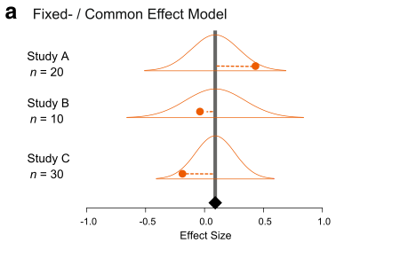
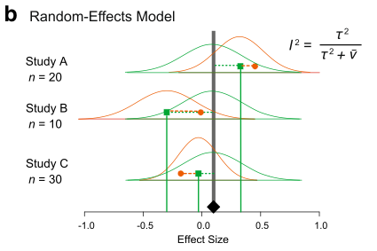
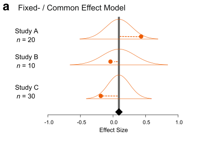
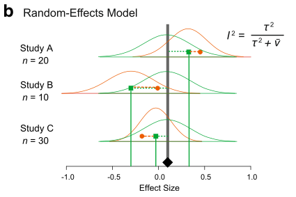
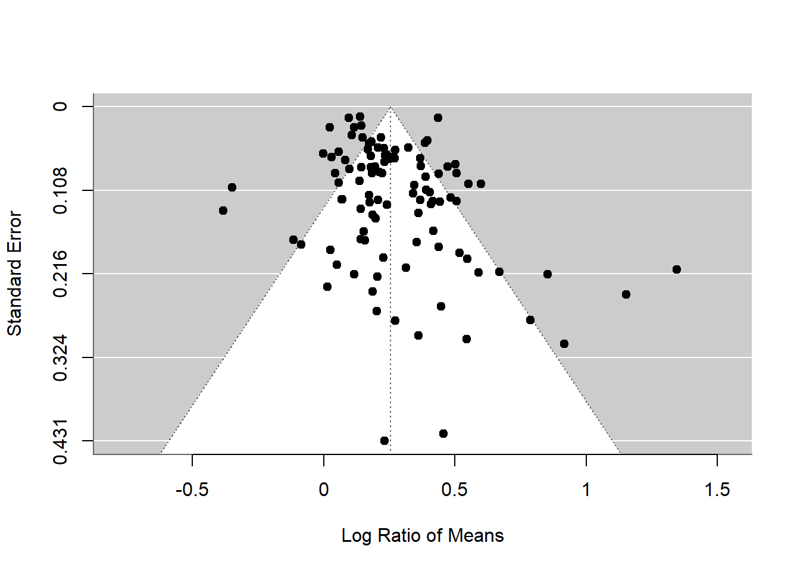
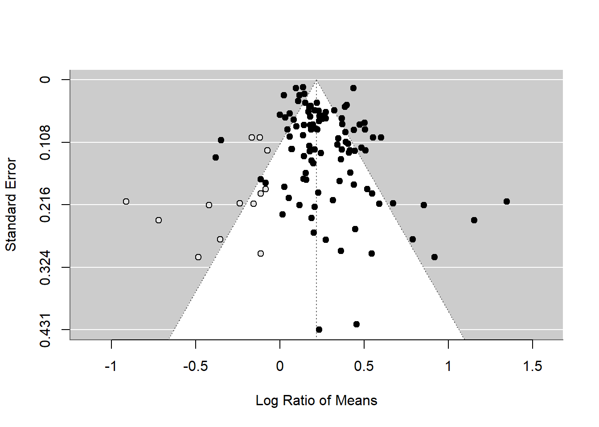

Primero lee nuestra introducción al metaanálisis con instrucciones para calcular tamaños del efecto. Ahora, consideramos los modelos estadísticos para estimar los tamaños del efecto medio y la influencia de las variables moderadoras.
Existen dos modelos principales de metaanálisis: 1) el modelo de efecto fijo y 2) el modelo de efecto aleatorio (en realidad, se menciona un tercer tipo, pero este es una extensión del segundo modelo). Debido a que los efectos fijos tienen un significado diferente en otro contexto, esta denominación puede resultar confusa. Por lo tanto, ahora las personas llaman al primer modelo ‘modelo de efecto común’. Puedes ver una representación visual de estos dos modelos (de la Figura 4 en Nakagawa et al. 2017).


Una representación matemática del modelo de efecto común es:
\[\begin{equation} y_i=b_0+e_i, \\ e_i\sim \mathcal{N}(0,v_i),\ \end{equation}\]\end{equation}
donde \(y_i\) es el tamaño del efecto \(i\) (del \(i\)-ésimo estudio), \(b_0\) es la media general (o media metaanalítica), \(e_i\) es una desviación de la media general y sigue una distribución normal con varianza específica del estudio \(v_i\) (que se puede obtener a partir de las fórmulas anteriores). Ten en cuenta que los pesos para este modelo son \(1/v_i\). Como puedes ver, este es un modelo muy simple; básicamente, estamos estimando la media considerando los pesos.
Es importante destacar que este modelo asume que existe una media común para todos los estudios incluidos. ¿Es realista esto? Probablemente no, especialmente si estás combinando diferentes especies.
El modelo de efecto aleatorio se puede escribir de la siguiente manera:
\[\begin{equation}
y_i=b_0+s_i+e_i,
\\
s_i\sim \mathcal{N}(0,\tau^2),\
\\
e_i\sim \mathcal{N}(0,v_i),\
\end{equation}\]e_i(0,v_i),
\end{equation}
donde \(s_i\) es una desviación específica del estudio de la media general para el \(i\)-ésimo estudio, sigue una distribución normal con la varianza entre estudios, a menudo referida como \(\tau^2\), y los demás términos son iguales a los mencionados anteriormente. A diferencia del modelo de efecto común, un modelo de efecto aleatorio asume que diferentes estudios tienen diferentes medias. Ten en cuenta que los pesos para este modelo son \(1/(\tau^2+v_i)\). Volveremos a este punto, ya que resulta ser bastante importante.
Utilizaremos la función rma de metafor para ejecutar un modelo de efecto común.
common_m <- rma(yi = yi, vi = vi, method = "FE", data = dat)Especificamos el tamaño del efecto (yi), su varianza (vi), el método (“FE” para efecto fijo) y el marco de datos (dat).
Para ver los resultados, usa summary en el objeto del modelo:
summary(common_m)
Fixed-Effects Model (k = 102)
logLik deviance AIC BIC AICc
-245.9580 769.0185 493.9160 496.5410 493.9560
I^2 (total heterogeneity / total variability): 86.87%
H^2 (total variability / sampling variability): 7.61
Test for Heterogeneity:
Q(df = 101) = 769.0185, p-val < .0001
Model Results:
estimate se zval pval ci.lb ci.ub
0.2088 0.0054 38.3374 <.0001 0.1982 0.2195 ***
---
Signif. codes: 0 '***' 0.001 '**' 0.01 '*' 0.05 '.' 0.1 ' ' 1¡Listo, fue fácil! La media general es estadísticamente significativa y está alrededor de 0.2. ¿Qué significa 0.2? Convertámoslo de vuelta a la escala original: una proporción de respuesta entre las medias del grupo de control y experimental.
exp(0.2)[1] 1.221403Esto significa que un rasgo de planta (por ejemplo, la masa) fue un 22% más grande en el grupo experimental (RR\(=\bar{x}_{E}/\bar{x}_{C}\)), lo cual parece ser un efecto bastante grande (recuerda que necesitamos interpretar nuestros resultados de manera biológicamente significativa). Ten en cuenta que la desigualdad de Jensen establece que esto está un poco mal, pero no entraremos en eso hoy.
Ahora pasamos al modelo de efectos aleatorios, que es un modelo más realista. Nuevamente, utilizamos la función rma, pero esta vez cambiamos el método a REML, que es el método predeterminado y el mejor método para el metanálisis de efectos aleatorios.
random_m <- rma(yi = yi, vi = vi, method = "REML", data = dat)
summary(random_m)
Random-Effects Model (k = 102; tau^2 estimator: REML)
logLik deviance AIC BIC AICc
7.0449 -14.0898 -10.0898 -4.8596 -9.9674
tau^2 (estimated amount of total heterogeneity): 0.0262 (SE = 0.0053)
tau (square root of estimated tau^2 value): 0.1619
I^2 (total heterogeneity / total variability): 88.90%
H^2 (total variability / sampling variability): 9.01
Test for Heterogeneity:
Q(df = 101) = 769.0185, p-val < .0001
Model Results:
estimate se zval pval ci.lb ci.ub
0.2553 0.0198 12.8899 <.0001 0.2165 0.2941 ***
---
Signif. codes: 0 '***' 0.001 '**' 0.01 '*' 0.05 '.' 0.1 ' ' 1Compare la media general de este modelo con el modelo de efecto común. Oh, la media general del modelo de efectos aleatorios es realmente mayor que la del modelo de efectos fijos. Vale, eso a veces sucede (descubriremos que esto probablemente sea una sobreestimación más tarde). Esperamos que el intervalo de confianza del 95% sea más amplio (es decir, más realista) en este modelo de efectos aleatorios, ya que este modelo tiene una mejor suposición que el modelo de efecto común.
La salida del modelo de efectos aleatorios tiene más elementos que el modelo de efecto común. Tenemos tau^2 (\(\tau^2\)) y I^2 (\(I^2\)), dos medidas muy comunes de heterogeneidad (nota que H^2, o \(H^2\), es una transformación de \(I^2\)).
La heterogeneidad es la variación en los tamaños del efecto que no se explica por la varianza del error de muestreo.
En otras palabras, es la variación real en los datos. Creo que \(I^2\) es un índice bastante importante, ya que puede indicar el porcentaje de variación real en tus datos metaanalíticos. Se puede calcular de la siguiente manera (como viste en la figura del modelo de efectos aleatorios anterior):
\[\begin{equation} I^2=\frac{\tau^2}{(\tau^2+\bar{v})}, \end{equation}\]
donde \(\bar{v}\) es un valor representativo de \(v_i\) (o piensa en \(\bar{v}\) como el promedio de \(v_i\), aunque no es exactamente eso). Observa que el denominador es la varianza total que existe en los datos. Los valores de referencia para \(I^2\) son 25, 50 y 75% para heterogeneidad baja, moderada y alta, respectivamente (Higgins et al. 2003).
Nuestro valor de \(I^2\) es del 88.9%, muy alto, y este valor es, como esperabas, estadísticamente significativo al ser probado con el valor \(Q\) (que sigue una distribución \(\chi^2\) definida por el valor df, en este caso \(df = 101\)).
Recientemente, hicimos un metaanálisis de metaanálisis (un metaanálisis secundario) para analizar cuál es el valor promedio de \(I^2\) en el campo de la ecología y la evolución (Senior et al. 2016). ¡El valor promedio fue del 92%! Por lo tanto, esto indica que realmente deberíamos ajustar el modelo de efectos aleatorios en lugar del modelo de efecto común, ya que este último asume que la heterogeneidad es cero o \(\tau^2=0\) e \(I^2 = 0\). ¿O realmente es así? Lo descubriremos más adelante.
La existencia de heterogeneidad establece el escenario para la meta-regresión. Esto significa que ahora introducimos predictores (llamados ‘moderadores’ en la terminología metaanalítica) en nuestro modelo para explicar la heterogeneidad (equivalente a los modelos de regresión normales).
Ajustar una meta-regresión también es bastante sencillo. En este ejemplo, ajustaremos tres moderadores que fueron recopilados por los autores: 1) time (cuánto tiempo duró el experimento), 2) method (diferentes formas de aumentar el CO\(_2\)) y 3) fungroup (grupo funcional, es decir, angiospermas, gimnospermas o fijadores de N\(_2\)).
Utilizamos nuevamente rma, pero ahora con una declaración de modelo.
metareg <- rma(yi = yi, vi = vi, mod = ~time + method + fungrp, method = "REML",
data = dat)
summary(metareg)
Mixed-Effects Model (k = 102; tau^2 estimator: REML)
logLik deviance AIC BIC AICc
5.1938 -10.3876 3.6124 21.5628 4.8851
tau^2 (estimated amount of residual heterogeneity): 0.0267 (SE = 0.0056)
tau (square root of estimated tau^2 value): 0.1634
I^2 (residual heterogeneity / unaccounted variability): 87.16%
H^2 (unaccounted variability / sampling variability): 7.79
R^2 (amount of heterogeneity accounted for): 0.00%
Test for Residual Heterogeneity:
QE(df = 96) = 658.4083, p-val < .0001
Test of Moderators (coefficients 2:6):
QM(df = 5) = 2.9089, p-val = 0.7140
Model Results:
estimate se zval pval ci.lb ci.ub
intrcpt 0.3043 0.0516 5.8934 <.0001 0.2031 0.4055 ***
time -0.0001 0.0001 -1.0509 0.2933 -0.0002 0.0001
methodGH -0.0369 0.0567 -0.6501 0.5157 -0.1481 0.0743
methodOTC 0.0308 0.0902 0.3410 0.7331 -0.1461 0.2076
fungrpGYMNO -0.0454 0.0605 -0.7501 0.4532 -0.1640 0.0732
fungrpN2FIX 0.0044 0.1701 0.0258 0.9794 -0.3291 0.3379
---
Signif. codes: 0 '***' 0.001 '**' 0.01 '*' 0.05 '.' 0.1 ' ' 1Bueno, ¡no explican nada! Observa el valor \(R^2\) y, como esperabas, las pruebas para moderadores (nuevamente el valor Q) indican que no son significativos. ¡Un modelo terrible! Así que nos damos por vencidos aquí (en un metaanálisis real, necesitas hacer esto de manera más sistemática, preferiblemente basado en tus hipótesis a priori).
Bien, parece que un aumento de CO\(_2\) promueve el crecimiento de las plantas (lo cual puede no ser sorprendente), pero estamos asumiendo que el conjunto de datos que tenemos no sufre de sesgo de publicación.
El sesgo de publicación, en su forma más simple, significa que los resultados significativos son más propensos a ser publicados que los resultados no significativos.
Pero existen varios métodos que las personas han estado utilizando. Los dos métodos más comunes, a menudo utilizados en conjunto, son: 1) gráfico de embudo (funnel plot), que se utiliza para detectar una asimetría en el embudo (un indicio de sesgo de publicación), y 2) la prueba de regresión de Egger, con la cual se prueba estadísticamente la asimetría del embudo.
¿A qué me refiero con ‘asimetría del embudo’? Si trazamos los tamaños de efecto y su error estándar en orden descendente (\(se\); ver figura a continuación), se supone que veremos un embudo invertido donde los tamaños de efecto con un \(se\) bajo (o pesos altos) están más estrechamente agrupados que los tamaños de efecto con un \(se\) alto (o pesos bajos). Pero esta forma de embudo solo ocurre cuando no hay sesgo de publicación. Si existe, deberíamos ver una asimetría en el embudo. Esto se debe a que los estudios con tamaños de muestra pequeños (es decir, \(se\) alto, lo que conduce a no significancia) tienen menos probabilidades de ser publicados. Veremos un ejemplo de esta asimetría del embudo en nuestro conjunto de datos.
Para crear un gráfico de embudo y ejecutar la prueba de Egger:
funnel(random_m)
# Note that the orignal Egger's test is regtest(random_m, model='lm')
regtest(random_m)
Regression Test for Funnel Plot Asymmetry
Model: mixed-effects meta-regression model
Predictor: standard error
Test for Funnel Plot Asymmetry: z = 3.2046, p = 0.0014
Limit Estimate (as sei -> 0): b = 0.1584 (CI: 0.0890, 0.2278)El gráfico de embudo y la prueba de Egger sugieren asimetría en el embudo. Pero debemos tener cuidado. La asimetría del embudo no solo puede ser causada por sesgo de publicación, sino también por heterogeneidad (uno o más moderadores no detectados que distorsionan la forma del embudo). Dado que tenemos mucha varianza inexplicada (es decir, heterogeneidad), no estamos seguros de qué está causando esta asimetría. Pero tenemos algunas evidencias de sesgo de publicación. Un punto relevante es que si la metarregresión explica mucha heterogeneidad, debes usar ese modelo de metarregresión en la función regrest (en nuestro caso, regrest(metareg), pero no lo hice porque nuestro modelo metareg no explicaba nada).
Existe un método alternativo, que tiene un nombre interesante, el método de recorte y relleno (trim-and-fill). Verás la razón por la que se llama así. Podemos utilizar este método utilizando la función trimfill.
# Note that we are using the defult estimator ('L0'), but there are two others
# availablere
tf_m <- trimfill(random_m)
tf_m
Estimated number of missing studies on the left side: 13 (SE = 6.5629)
Random-Effects Model (k = 115; tau^2 estimator: REML)
tau^2 (estimated amount of total heterogeneity): 0.0421 (SE = 0.0076)
tau (square root of estimated tau^2 value): 0.2053
I^2 (total heterogeneity / total variability): 92.06%
H^2 (total variability / sampling variability): 12.59
Test for Heterogeneity:
Q(df = 114) = 872.7669, p-val < .0001
Model Results:
estimate se zval pval ci.lb ci.ub
0.2166 0.0227 9.5234 <.0001 0.1721 0.2612 ***
---
Signif. codes: 0 '***' 0.001 '**' 0.01 '*' 0.05 '.' 0.1 ' ' 1funnel(tf_m)
Como puedes ver, este método utiliza la asimetría para agregar más puntos y proporcionar una media general revisada, que es menor que la del modelo de efectos aleatorios original. Aunque este efecto sigue siendo significativo, este método podría convertir una media general significativa en una no significativa. Pero en lugar de considerar esto como una estimación real de la media general, debemos verlo como parte de un análisis de sensibilidad.
Existen más métodos para realizar pruebas de sesgo de publicación, ninguno de los cuales es perfecto, pero debemos realizar algunas de estas pruebas (ver más en Nakagawa et al. 2017 y las referencias allí citadas).
Recientemente aprendí que existe otro modelo meta-analítico (ni común ni aleatorio) que es más robusto frente al sesgo de publicación. Recuerda lo que mencioné anteriormente.
Esto es problemático porque bajo el sesgo de publicación, como vimos anteriormente, los tamaños de efecto con tamaños de muestra pequeños (valores de \(v_i\) muy altos) deberían tener un peso menor en comparación con los tamaños de efecto con tamaños de muestra grandes (valores de \(v_i\) bajos). Cuando existe sesgo de publicación, el modelo de efectos aleatorios podría proporcionarnos una estimación sesgada… ¿Qué podríamos hacer? ¿Podríamos usar el peso de \(1/v_i\) como en el modelo común, pero utilizar la estructura del modelo de efectos aleatorios? ¡Resulta que sí se puede!
# We make weights, which is 1/vi and stick that into the argument, weights
dat[, "wi"] <- 1/dat$vi
weight_m <- rma(yi = yi, vi = vi, weights = wi, method = "REML", data = dat)
summary(weight_m)
Random-Effects Model (k = 102; tau^2 estimator: REML)
logLik deviance AIC BIC AICc
4.2927 -8.5854 -4.5854 0.6448 -4.4630
tau^2 (estimated amount of total heterogeneity): 0.0262 (SE = 0.0053)
tau (square root of estimated tau^2 value): 0.1619
I^2 (total heterogeneity / total variability): 88.90%
H^2 (total variability / sampling variability): 9.01
Test for Heterogeneity:
Q(df = 101) = 769.0185, p-val < .0001
Model Results:
estimate se zval pval ci.lb ci.ub
0.2088 0.0473 4.4121 <.0001 0.1161 0.3016 ***
---
Signif. codes: 0 '***' 0.001 '**' 0.01 '*' 0.05 '.' 0.1 ' ' 1En realidad, este estimador puntual es exactamente el mismo que el del modelo de efecto común (esto no es solo una coincidencia, ya que este modelo calcula la media general como el modelo de efecto común). Pero es importante tener en cuenta que este modelo tiene un intervalo de confianza del 97% más amplio que el modelo de efecto común, y este nivel de incertidumbre es más realista (al igual que el modelo de efectos aleatorios). Básicamente, ¡este modelo tiene lo mejor de ambos mundos!
Este modelo se basa en el artículo de Henmi y Copas (2010). Aunque es más robusto al sesgo de publicación, no conozco ningún metanálisis en el campo de la ecología y la evolución que utilice este modelo. ¿Probablemente deberíamos usar este modelo en lugar de un modelo de efectos aleatorios? Creo que sí, llamemos a este modelo el ‘modelo robusto’. Creo que también deberíamos usar este modelo robusto para la meta-regresión. Agradezco a Wolfgang por hablarme de este modelo.
Si estás de acuerdo con todo esto, pasa a los modelos más complejos.
¿Alguna pregunta? Envíame un correo electrónico a s(-dot-)nakagawa(-at-)unsw(-dot-)edu(-dot-)au. También visita nuestro sitio web.
Visita el sitio web del paquete ‘metafor’. Allí encontrarás muchos ejemplos prácticos.
Henmi, M., and J. B. Copas. 2010. Confidence intervals for random effects meta-analysis and robustness to publication bias. Statistics in Medicine 29:2969-2983.
Higgins, J. P. T., S. G. Thompson, J. J. Deeks, and D. G. Altman. 2003. Measuring inconsistency in meta-analyses. British Medical Journal 327:557-560.
Nakagawa, S., D. W. A. Noble, A. M. Senior, and M. Lagisz. 2017. Meta-evaluation of meta-analysis: ten appraisal questions for biologists. BMC Biology 15:18.
Senior, A. M., C. E. Grueber, T. Kamiya, M. Lagisz, K. O’Dwyer, E. S. A. Santos, and S. Nakagawa. 2016. Heterogeneity in ecological and evolutionary meta-analyses: its magnitude and implications. Ecology 97:3293-3299.
Autores: Shinichi Nakagawa y Malgorzata (Losia) Lagisz
Año: 2016
Última actualización: Nov. 2023